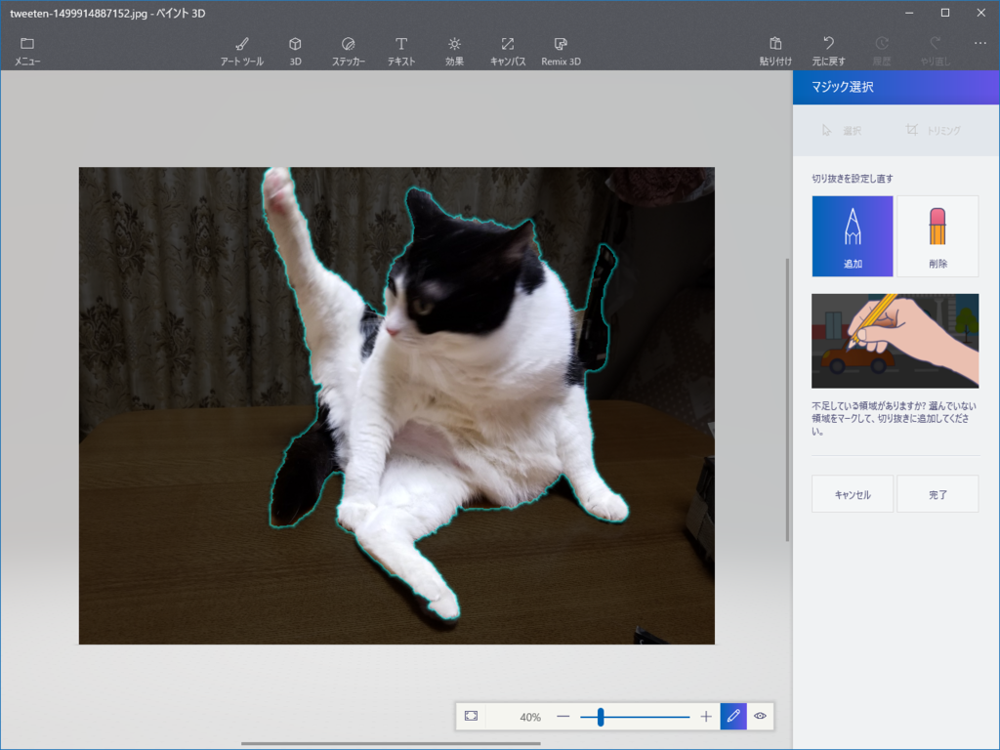

Windows 10 の「ペイント 3D」でクソコラがはかどる件について
公開日：
きっかけ
ロマサガのコマンド入力待ち pic.twitter.com/47zYBMNqMS
— バッタ (@honey_burst) 2017年7月12日
誰かこれをインペリアルクロスに並べてよ
— エロやなぎ先生 (@daruyanagi) 2017年7月13日
参考：インペリアルクロス
“インペリアルクロス”はロマサガの陣形やね。最初に使えるヤツ。
「ペイント 3D」でやってみた

「誰かにやってもらうのを口開けて待っている」のはよくないと思い、「ペイント 3D」でクソコラしてみることにした。

まずネコの画像を「ペイント 3D」で開いて、［Ctrl］＋［A］キーで全選択。ほんとは部分選択した方がいいのかもしれないけれど、これぐらい被写体とそれ以外がクッキリ区別のつく画像だったら、全選択で問題ないと思う。画像を選択すると［マジック選択］というコマンドが現れるので、続けてこれをクリック。

すると、ネコが選択される。右上の部分がちょっと誤選択されてるので、［削除］ボタンを押してペンかマウスでさっとなでる。

割と適当で大丈夫。

いい感じになったら［完了］ボタンを押す。
するとモリッというエフェクトとともに、選択範囲が抜き取られる。

まさに背景から“抜き出した”感じで、こんな風に上下・左右・前後を自由に移動させられるようになる。今回は［ステッカーの追加］コマンドで“ステッカー”（後述）に変換して、この画像は捨てる。

次に適当なインペリアルクロスの画像を拾ってきて（ごめんね、借りるね）、「ペイント 3D」で開く。ツールバーだからタブだかの［ステッカー］を開くと、“カスタム ステッカー”が選べるようになってるはずなので、それをクリック。“ステッカー”っていうのは 3D モデルなんかに張り付けられるシールのようなもんかな。“ステッカー” から 3D モデルも作れるみたいだけど、そこらへんはイマイチわかっていない。

そしたらこんな感じになるはず。あとは大きさを調整して、適当に配置。［スタンプ］アイコンをクリックすると“ステッカー”を量産できる。

これでだいたい完成。クソコラなので、完成度は追及しない。
ツイート
Windows 10 のペイント 3D めっちゃ便利だな pic.twitter.com/ffiucMIscb
— エロやなぎ先生 (@daruyanagi) 2017年7月13日
ツイートの間隔をみてもらえばわかるけど、画像を探す時間も含めて、加工時間は正味3分ぐらい。誰でもお手軽なクソコラが作れて、大変便利な時代になったと思う。
Windows 10 はいいぞ！